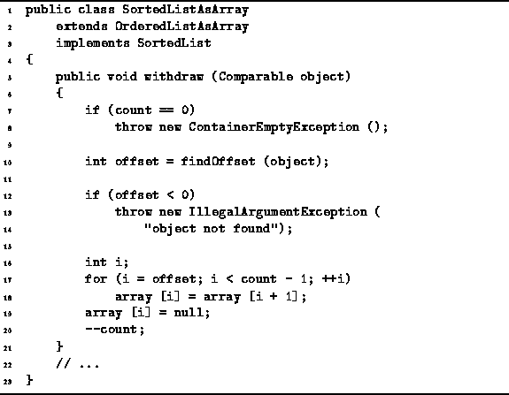

Data Structures and Algorithms
with Object-Oriented Design Patterns in Java
Data Structures and Algorithms
with Object-Oriented Design Patterns in Java
The purpose of the withdraw method is to remove
an item from the sorted list.
Program  defines the withdraw
method which takes an object and removes it from the sorted list.
defines the withdraw
method which takes an object and removes it from the sorted list.

Program: SortedListAsArray class withdraw method.
The withdraw method makes use of findOffset
to determine the array index of the item to be removed.
Removing an object from position i of
an ordered list which is stored in an array
requires that all of the objects at positions
i+1, i+2, ...,  ,
be moved one position to the left.
The worst case is when i=0.
In this case,
,
be moved one position to the left.
The worst case is when i=0.
In this case,  items need to be moved to the left.
items need to be moved to the left.
Although the withdraw method is able to make
use of findOffset to locate the position
of the item to be removed in  time,
the total running time is dominated by the left shift,
which is O(n) in the worst case.
Therefore, the running time of withdraw is O(n).
time,
the total running time is dominated by the left shift,
which is O(n) in the worst case.
Therefore, the running time of withdraw is O(n).
 Copyright © 1998 by Bruno R. Preiss, P.Eng. All rights reserved.
Copyright © 1998 by Bruno R. Preiss, P.Eng. All rights reserved.